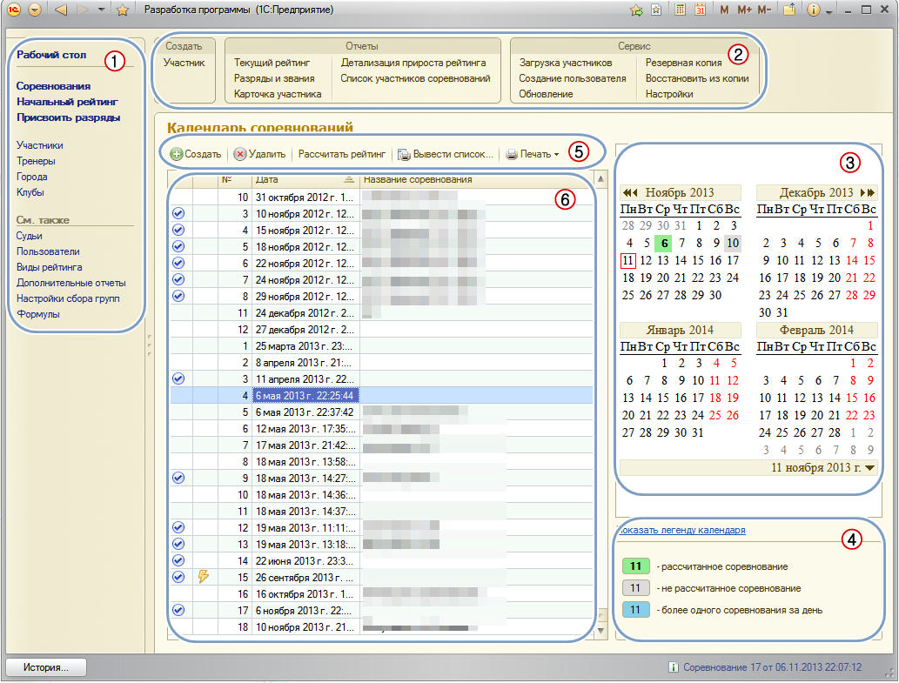
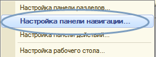

Календарь соревнований
По умолчанию это первое окно, которое Вы видите при открытии программы. Оно открывается при нажатии элемента "Рабочий стол" в панели навигации.

1. Панель навигации
В этом блоке содержится доступ к основным данным информационной базы, такие, как справочники (участники, тренеры, города и т.д.) и документы (соревнования, присвоение разряда и т.д.). При нажатии на один из элементов блока, открывается список с данными соответствующего элемента. Например, если нажать на «Участники» откроется список всех участников занесенных в базу.
В блоке навигации могут существовать подразделы, сейчас существует «См. также». В этих подразделах содержится информация, относящаяся к названию подраздела, а принцип работы с ними такой же, как описано выше.
2. Панель действий
Блок для быстрого доступа к основным действиям с информационной базой. Эта панель также разделена на 3 блока:
· «Создать» - быстрое создание, элементов справочника или документов.
· «Отчеты» - открытие отчетов для просмотра соответствующих данных.
· «Сервис» - сервисные функции, который осуществляют (помогают) работать с программой или данными информационной базы.
Важно. Все панели можно настраивать, например, убрать не нужные для Вас элементы в блоках панели, добавить некоторые скрытые элементы, а так же поменять их порядок

Для вызова меню настроек, необходимо нажать правой кнопкой мыши на свободной области панели. Будет подсвечена жирным шрифтом текущая область.
3. Календарь
Позволяет просмотреть календарь дат соревнований и завести на конкретную дату соревнование двойным нажатием левой кнопки мыши на дату:
· Если в этот день уже были соревнования, то будет показан список этих соревнований, с возможность завести новое.
· Если в этот день было только одно соревнование тогда, оно откроется автоматически.
4. Легенда календаря
Даты календаря оформляются разными цветами, значение которых можно посмотреть, открыв «Легенду» (подсказку) по цветовом оформлению.
5. Командная панель списка
Содержит действия над элементом списка, в данном случае применятся к документу «Соревнование»
· « Создать» - создает новое соревнование, без записи в базу.
Создать» - создает новое соревнование, без записи в базу.
· « Удалить» - полностью удаляет документ из базы, и все его расчеты и игры.
Удалить» - полностью удаляет документ из базы, и все его расчеты и игры.
· « Вывести список…» - просто выводит все соревнования списка на экран, который можно сохранить в Excel, PDF и так далее.
Вывести список…» - просто выводит все соревнования списка на экран, который можно сохранить в Excel, PDF и так далее.
· « Печать» - меню печати для выделенного документа в списке, с соответствующим действием. Это же меню будет доступно в самом документе «Соревнование».
Печать» - меню печати для выделенного документа в списке, с соответствующим действием. Это же меню будет доступно в самом документе «Соревнование».
6. Список соревнований
Существует 2 списка:
1. Находится сразу на рабочем столе при открытии (с календарем).
2. При нажатии на элемент «Соревнования» на панели навигации.
В большинстве функций эти два списка дублируют друг друга, с незначительными изменениями.
В этот список входят все заведенные соревнования в базу. Для удобства пользователя «Рассчитанные соревнования» показываются значком  . Соревнования, которые были заведены в режиме «Быстрого..» отображаются таким значком
. Соревнования, которые были заведены в режиме «Быстрого..» отображаются таким значком  .
.
Следующий раздел: «Соревнование»
Редакция от 13.11.2013